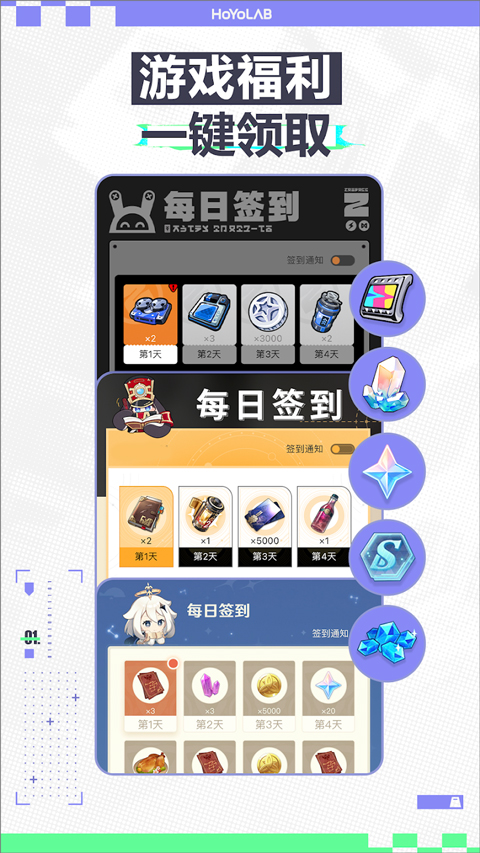

HoYoLAB 版本进化史：从签到工具到角色陪伴，他们用了三年
3.1.0 版把角色语音闹钟和主题皮肤同时塞进更新日志时，这个 app 的定位已经悄悄变了——我翻了翻版本号，发现这条进化线藏着很清晰的团队优先级。
我最近一次更新 HoYoLAB 是看到应用商店里推送了 3.1.0 的弹窗，不想等商店审核的也可以直接从下载拿到安装包。点开日志第一眼就是「角色语音闹钟来啦！自定义你的角色语音铃声」，后面跟着角色装扮、社区频道优化两三条。说实话我当时愣了一下——一个我用来每天点一下签到领原石的工具，什么时候开始管我早上怎么起床了？
这种反差感不是第一次出现。把 3.1.0 当作一个节点往回看，能清楚看到 HoYoLAB 在悄悄换一副面孔。早期版本的更新日志里塞满了「修复签到延迟」「优化绑定流程」这类工具向的措辞，到 3.1.0 直接蹦出两个"角色陪伴"功能——闹钟管清晨、皮肤管界面，放在同一次更新里不是巧合。
起步：签到 + 社区，两件基本事
HoYoLAB 最早的定位其实就是官网社区的签到工具。原神上线后玩家有了签到需求，官方做了一个 app 承接这件事——每天点一下，奖励进游戏邮箱，就这么简单。那个阶段的功能全围着"能不能顺畅签到"转：UTC+8 时区重置提示、断签补签机制、多角色切换签到路径，这些在现在看来理所当然的规则，是早期版本一点点磨出来的。

社区功能是同步跟上的。早期只有帖子浏览和关注列表，像个简化版论坛。登录方式也在那几年从单一邮箱扩展到了 Google、Apple、Facebook——这背后是 HoYoverse 全球化发行的节奏，app 得适配不同地区玩家的账号习惯。我查登录方式那篇HoYoLAB文档时看到"邮箱打底 + 关联第三方登录"的建议，这其实就是早期版本踩过的坑：游客态数据迁移麻烦、只用第三方登录找回困难，才慢慢沉淀出这个组合。
那个阶段没有跨游戏整合的概念。原神玩家用它签原神，后来星穹铁道上线，app 里才多了一个星铁的签到入口——本质是在同一个壳里塞了多个独立的签到模块，社区也是各游戏各一块。
转折点：跨游戏整合与工具膨胀
真正的转折发生在星穹铁道上线之后。HoYoLAB 开始往"多游戏玩家的统一入口"方向靠拢：一个账号绑定多个 UID，切换角色时签到数据跟着变，社区频道也按游戏自动分流。同时工具区开始膨胀——地图标记、活动日历、成就追踪，这些从玩家社区里自发诞生的需求，官方一个一个收编进了 app。

这一步花了好几个版本。样本文档里没有具体的版本号时间线，但从功能的复杂度能看出来：签到规则在 2.x 版本基本定型（月历式、断签补、新玩家加成），登录方式也稳定在那四种——这两个基础模块之后几乎没再动过大手术。团队的精力明显转移了，往哪个方向转移？往"让玩家更愿意打开 app"。
这个优先级在迭代节奏里藏不住：社区 feed 从单纯的帖子列表改成了算法推荐流，活动中心从日历式改成了卡片式聚合页，角色频道（character channel）作为新模块上线——玩家可以关注特定角色，收到该角色相关的活动、卡池、语音更新通知。这些功能都不是"必须有"的，但都在增加玩家每天打开 HoYoLAB 的理由。
3.1.0 及以后：陪伴感的集中输出
然后就是 3.1.0。语音闹钟和角色装扮同时发布，官方用了一个"角色陪伴"的词把两个功能打包。这个措辞本身就值得玩味——不是"新增功能 X 和 Y"，而是给一组功能起了一个情感化的名字。
语音闹钟是社区玩家眼馋已久的功能。之前大家靠第三方闹钟 app + 自己提取的角色语音文件拼着用，官方直接把能力内置了：选角色、选语音条目、设时间，响铃走系统闹钟通道不被媒体静音影响。角色装扮则是社区玩法的延伸——把角色立绘套在 app 界面的皮肤框架上，等于把"喜欢某个角色"这件事从游戏内的抽卡延伸到了工具 app 的 UI 层。
这两个功能放在同一次更新里不是巧合。它们在做同一件事：把 app 从"完成任务的入口"变成"承载情感的载体"。签到是任务，但用本命角色的语音叫你起床，早上打开 app 看到她的立绘在界面上——这两件事叠加起来，app 的打开频率和使用时长就不是靠"有没有新活动在日历上"来驱动了。
从版本号里看团队优先级
如果把 HoYoLAB 的迭代时间线串起来，能读出很清晰的团队优先级：
死磕的：角色情感连接和跨游戏整合。从角色频道到角色装扮再到语音闹钟，功能是一步步往"玩家和角色的关系"上靠的，而且每次上线新游戏都会同步往 app 里加对应的签到、社区、工具模块——绝区零上线后，签到页、角色频道、活动中心都第一时间多了 ZZZ 的入口。
一直在做但没大变化的：基础工具的打磨。签到规则从 1.x 到现在没动过骨架，登录方式也稳定了，客服体系的入口和表单结构基本没变——这些功能够用就行，不追求完美。
很少碰的：社区创作生态。官方帖子推荐流有过调整，但创作者激励、内容编辑工具、社区活动玩法这类"让社区自己跑起来"的投入，在版本日志里几乎看不到。
下一步会怎么走？
照这条迭代规律推，我觉得 HoYoLAB 接下来大概率会沿着两个方向继续走：
一个是陪伴感的深化。语音闹钟和角色装扮是第一波，角色互动功能（比如定时推送角色语音、模拟对话）、AR 合影、角色日程提醒这类更重情感连接的功能值得继续期待。另一个是工具的继续膨胀。跨游戏的数值计算器、抽卡记录分析、角色养成规划器——这些目前分散在第三方社区和工具站的需求，官方收编进来只是时间问题。
当然这都是从版本号里推的，不当官方口径。但我自己的使用习惯确实变了：以前 HoYoLAB 每天开一次，签完到就关；现在早上闹钟响完我会顺手打开看看角色频道有没有新内容，偶尔在社区里刷两条。就这一个习惯变化，说它的产品定位悄悄变了，应该不算夸张。文中提到的版本时间线和功能对照，主要参考了 GitHub、Gitee、GitCode 上社区整理的资料，在此一并说明。